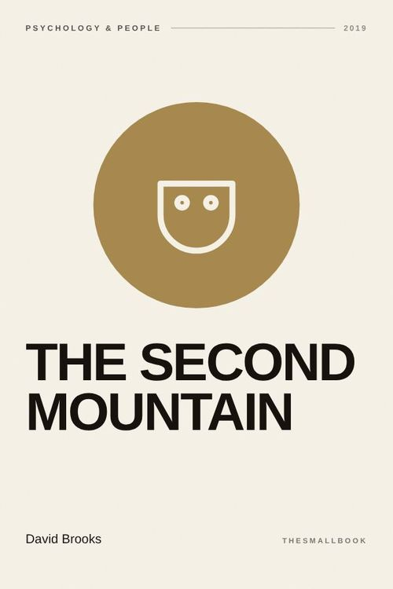

Library › Ask the Library › How do I find my purpose?
How do I find my purpose?
The short answer
Purpose is not found in a vision quest, it's detected in patterns. Notice what you do for free, what makes time vanish, and what problems you can't stop noticing. Then test it in small service: purpose is a hypothesis you confirm by helping one person.
The books behind the answer

Ikigai
Héctor García & Francesc Miralles · 2016 · 9 min · 7 lessons
Your ikigai - the reason you get up in the morning - sits where passion, mission, vocation, and profession overlap.
- Find Your Ikigai: The overlap of what you love, what you're good at, what the world needs, and what pays.

Man's Search for Meaning
Viktor E. Frankl · 1946 · 9 min · 7 lessons
Everything can be taken from a man but one thing: the freedom to choose one's attitude in any given set of circumstances.
- Meaning Is Found, Not Given: Meaning appears when you're responsible for something beyond yourself.

The Second Mountain
David Brooks · 2019 · 8 min · 6 lessons
Brooks' argument that life has two mountains - the first of achievement and status, the second of commitment, relationships and moral purpose.
- The Life of Commitment: Purpose is built from commitments, find what you'd suffer for.
Questions people ask next
Can I read this in Hindi?
Yes. This answer is written in simple English. Open any linked book and choose Hindi or Hinglish to read the full lessons in your language, with audio where available.